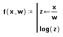

Type the left side of a function definition, followed by [:] for the definition symbol.
Define a local variable by typing the variable name (in this case, z), followed by the local assignment operator. This defines z only within the scope of this program; outside the program, z is undefined and has no effect.
Complete the local assignment, in this case by typing x/w in the placeholder to the right of the arrow. Select the entire expression.

Use the Add Line operator to add a second placeholder below the definition for an additional program statement (a program can have any number of statements).
The last placeholder should always contain the value returned by the program. Type log(z) into this placeholder.
